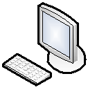

ANNYYS_Dを正しく機能させるには専用のプラグインとJAVA実行環境が必要です。
この文書は最後までお読みください。
【※注意事項】
本番環境において、FileMaker Server(Advanced) 無しでの運用は推奨していません。
動作速度が他の端末の処理内容によって大きく左右されやすく、実用において動作が非常に鈍くなることがあります。
ANNYYS_D版の運用上の保守や保全性に関しても、性質上、保つことができないことがあります。
ダウンロードしたANNYYS_Dパッケージは解凍すると以下のようになっています。（基本動作に関係のないファイル・フォルダ類は表示していません。）
これらのファイルをFileMaker Serverが稼働するマシン上に配置してください。
※動作確認など試験的に起動したい場合。FileMakerProV11以上がインストールされているＰＣであればANNYYS_DファイルをWクリックしてすると起動できます。（使い方や動作内容はFileMaker Serverでホストされている内容とまったく同じです。）
※解凍時にトップフォルダのANNYYS_D（赤字部分）が二重構造になっていないか注意してください。
| 種類 | ||
|---|---|---|
| サーバー | FileMaker Server(Advanced)11 またはFileMaker Server(Advanced)12の動作する環境 | |
| OS | Windows2003 Server, Windows2008 Server OS X Mountain Lion および OS X Mountain Lion Server v10.8 * (64-bit) | |
| CPU他 | Dual Core 2Ghz以上 / Memory:4GB / HDD:500GB ※実装メモリは8GB以上推奨、但しOSによるメモリ読み込制限があるので注意(Windows) | |
| クライアント  | FileMakerPro(Advanced)11 またはFileMakerPro(Advanced)12の動作する環境 | |
| OS | Windows 8, Windows 8 Pro* Windows 7 Ultimate, Professional, Home Premium* Windows Vista Ultimate, Business, Home Premium (Service Pack 2)* Windows XP Professional, Home Edition (Service Pack 3)* OS X Mountain Lion v10.6,7,8* | |
| CPU他 | Dual Core 2Ghz以上 / Memory:4GB / HDD:500GB | |
| プリンタ | 任意、但しクライアントが実装するＯＳに対応したものである事。 ネットワークインターフェースを有しTCP/IPプロトコルで接続可能なプリンタを推奨。 | |
※FileMakerPro(Advanced)およびFileMaker Server(Advanced)の最新の動作環境はhttp://www.filemaker.co.jp/を参照してください。
※サーバおよびクライアントを仮想環境において実装する場合において割り当てる場合のリソーススペックも同程度に設定してください。
例えば、以下のような環境において、日レセを稼働させている環境が既にあると仮定します。
図のように、日レセのインフラは何処かしらのベンダーのサポートを受けており、
サーバーは主従2台構成で端末が2台あるという想定です。
端末はWindows か MacOS で日レセクライアント(monsiaj)をインストールして稼働していると想定しています。
ここにANNYYSを導入する場合以下のような構成を推奨しています。
サーバー機1台と診察室用の新たな端末２台を加え、既にある日レセ端末でもANNYYS_D版を使えるようにすると言う構成です。
（※プリンタはオプションです。）
端末ＰＣがWindows か MacOS であれば、FileMakerProと日レセクライアント(monsiaj)を同時にインストールする事は可能です。
ただし、日レセサポートベンダーから端末の供給やサポートを受けている場合は、該当ベンダーに確認が必要です。
端末として利用するPCに、FileMaker Pro、サーバー機にはFileMaker Serverをインストールします。
(特にWindows2008以後に） FileMaker Server(Advenced)をインストールする場合、
ファイヤーウォールの設定で必須ポートの開放を忘れないようにしてください
[抜粋]
FileMaker Server入門ガイド 第 1 章クイックスタートインストール
サーバーコンピュータにファイアウォールがある場合は、ファイアウォールの必要なポートを開いて、
ユーザおよび管理者と通信できるようにします。
ANNYYS_Dには以下のレベルでセキュリティが組み込まれています。
アクセスアカウント、及び、パスワードのデフォルト値は非常に簡単なものなので、実利用の際には変更して利用するようにしてください。
| LEVEL 1 | LEVEL 2 | LEVEL 3 | LEVEL 4 | LEVEL 5 | |
|---|---|---|---|---|---|
| デフォルトアカウント ※パスワード共通 | l1（エルイチ） | l2（エルニ） | l3（エルサン） | l4（エルヨン） | Admin（Pなし） |
| 概要 | 閲覧のみ | 事務 患者登録 受付処理 会計処理 | 事務＆医師 患者登録 受付処理 診療記録 会計処理 | 管理者A 診療画面 患者情報のレイアウト変更可 | 完全アクセス |
| 受付画面 | 閲覧のみ | 作成・編集 | 作成・編集 | 作成・編集 | |
| 診察画面 | 閲覧のみ | 閲覧のみ | 作成・編集 | 作成・編集 | |
| 患者情報 | 閲覧のみ | 作成・編集 | 作成・編集 | 作成・編集 | |
| マスタ管理 | X | 作成・編集 | 作成・編集 | 作成・編集 | |
| 基本設定 | X | 作成・編集 | 作成・編集 | 作成・編集 | |
| 印刷 | X | 可 | 可 | 可 | |
| バックアップ | X | X | 可 | 可 | |
| リストア | X | X | 可 | 可 | |
| 他データの閲覧と編集 | X | X | X | 可 |